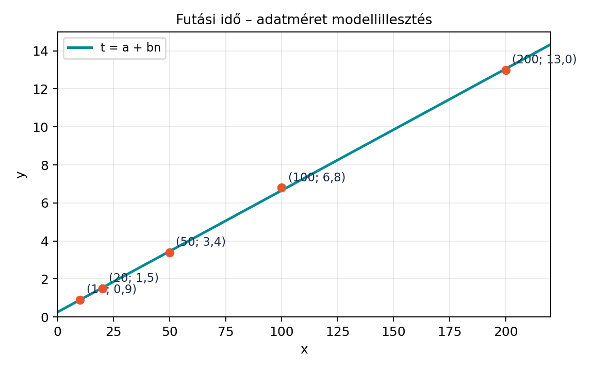

A Feltételes szélsőérték: Lagrange-multiplikátor alfejezetben képletesen megadott egyenletrendszereket oldottunk meg. A gyakorlati adatelemzésben azonban a célfüggvény általában több száz vagy több ezer változós, és a mérési pontok által meghatározott hibatagot szeretnénk minimalizálni. Két munkaeszköz vált alapvetővé: a legkisebb négyzetek (least squares) módszere, amely egy lineáris modell paramétereit zárt képlettel vagy lineáris egyenletrendszerrel adja meg, és a gradiens-ereszkedés (gradient descent), amely akkor is működik, amikor a célfüggvény nem vezethető vissza egyszerű lineáris megoldásra. Utóbbi a gépi tanulás, a képfeldolgozás és a nagy méretű inverz problémák alapvető optimalizáló algoritmusa.
Tegyük fel, hogy egy program feldolgozási idejét mérjük az adatméret függvényében. Az alábbi táblázat szemléltető, kerekített modelladatok, nem mért mintaadat:
| adatméret (MB) | 10 | 20 | 50 | 100 | 200 |
|---|---|---|---|---|---|
| futási idő (s) | 0,9 | 1,5 | 3,4 | 6,8 | 13,0 |
A pontok közel egy egyenesen fekszenek, de nem pontosan, mert mérési zaj és egyéb hatások is vannak. Kérdés: melyik az a egyenes, amely a legjobban illeszkedik? A „legjobban” szót úgy pontosítjuk, hogy az eltérések négyzetösszegét minimalizáljuk.

Legyenek adottak az pontok, , ahol legalább két különböző érték van. Az lineáris modellben a paraméterekre az
hibanégyzetösszeget minimalizáljuk. Mivel folytonos és a paraméterekben kvadratikus, a minimum létezik; a gradiens eltűnéséből kapjuk a normálegyenleteket.
Definíció. Az minimalizáló értékek az legkisebb négyzetes egyenes (least squares line) paraméterei. A megoldásra vezető
lineáris rendszert normálegyenleteknek (normal equations) nevezzük. Itt és a továbbiakban minden összeg -től -ig fut.
Tétel (normálegyenletek levezetése). Ha , akkor
Bizonyítás. A parciális deriváltak:
Szükséges feltétel, hogy mindkettő nulla legyen. Az elsőből
azaz , a másodikból pedig
azaz . A két egyenlet együtt a normálegyenletek. A determináns pozitív, mert
ahol , feltéve, hogy van két különböző . Cramer-szabállyal kapjuk a tételbeli és értékeket. A második deriváltakból álló Hesse-mátrix
és , továbbá , ezért pozitív definit, tehát a stacionárius pont valóban lokális, sőt konvex miatt globális minimum is. ∎
Példa. Határozzuk meg a bevezető modelladatokra a legkisebb négyzetes egyenest.
Megoldás. A táblázatból
A determináns:
Ebből
$$
\frac{25{,}6 - 0{,}063988 \cdot 380}{5} \approx \frac{1{,}2844}{5} = 0{,}25688. $$
Az illesztett egyenes tehát
ahol másodpercben, MByte-ban értendő. Ellenőrzés: esetén , ami jól visszaadja a s értéket relatív hibával kb. (). Az egyenes meredeksége közel ms/MB feldolgozási időt jelent.
Ha a célfüggvény nem kvadratikus, vagy túl sok változó van, a normálegyenletekhez hasonló zárt megoldás gyakran nem elérhető. Ilyenkor használjuk a gradiens módszert. Az ötlet egyszerű: a vektor mutat a leggyorsabb lokális csökkenés irányába, tehát kis lépést teszünk abba az irányba.
Definíció. Legyen differenciálható. A gradiens-ereszkedés (gradient descent) vagy legmeredekebb ereszkedés iterációja
ahol a lépésköz vagy tanulási ráta (learning rate).
A módszer nem bizonyítás, hanem numerikus eljárás: minden lépésben csak a gradiens kiértékelésére van szükség. A lépésköz megválasztása kritikus; túl nagy lépésköznél az iteráció oszcillálhat vagy divergálhat, túl kicsinél lassan konvergál.
Tétel (konvergencia kvadratikus függvényen). Legyen szimmetrikus, pozitív definit mátrix, és tekintsük az
kvadratikus függvényt. Ha az sajátértékei a intervallumba esnek, akkor a iteráció minden kezdőpontból az minimumhelyhez konvergál pontosan akkor, ha . A leggyorsabb konvergenciát az
adja, és ekkor a hiba legalább
szorzó: a hiba normája lépésenként legfeljebb a -szorosára csökken.
Bizonyítási terv. A gradiens . A minimum helye . Az iteráció hibavektorára lineáris rekurziót írunk fel, mátrixnormával becslünk, és a pozitív definit mátrix sajátértékeit használjuk.
Bizonyítás. Legyen . Mivel ,
Az szimmetrikus, ezért ortonormált bázisban diagonalizálható. Ha sajátértékei , akkor sajátértékei . A hiba euklideszi normáját a mátrix spektrálnormája szabályozza, így
Ha , akkor az -hez tartozó sajátértékre , tehát van nem csökkenő hiba, ezért szükséges a feltétel. A és maximuma akkor minimális, ha
azaz , és a közös érték
∎
A tételből látható, hogy ha rosszul kondicionált, vagyis , akkor közel , tehát a gradiens-ereszkedés nagyon lassú. A gyakorlatban emiatt gyakran skálázzák a változókat vagy másodrendű módszert használnak.
Az alábbi ábra a 2. feladat függvényén mutatja a lépésköz szerepét (, , , tehát , , ). A pontból indulva mellett a pálya lassan kúszik a minimum felé, mellett az első lépés , a pálya cikcakkban halad, és a hiba lépésenként pontosan -szorosára csökken, mellett pedig az -komponens lépésenként -szorosára változik, így a hiba nő.
Az egyváltozós Newton-módszert a Newton-módszer és numerikus deriválás alfejezetben tanultuk. Többváltozós minimalizálásra a másodrendű Taylor-közelítést használjuk:
Ha pozitív definit, ennek a kvadratikus modellnek a minimuma ott van, ahol a szerinti gradiense nulla:
tehát
Az egyváltozós Newton-módszerhez hasonlóan ez is lokális jellegű, de kvadratikus függvényen egyetlen lépésben eléri a minimumot. A gyakorlatban a Hesse-mátrix inverzének kiszámítása helyett a
lineáris rendszert oldják meg, és . Ha a Hesse-mátrix nem pozitív definit, akkor a Newton-lépés nem garantáltan csökkenő irány.
A fenti modelladatokat tekintsük úgy, mint egy szoftver teljesítménytesztjének kiértékelését. A mérnök azt szeretné előre jelezni, hogy MB feldolgozása mennyi ideig tart. A legkisebb négyzetes modellből
A modell értelmezése: s a feltételezett állandó indítási költség, míg s/MB az egy megabyte-ra jutó átlagos feldolgozási idő. A modell korlátja, hogy lineáris kapcsolatot feltételez. Ha az adatméret növekedésével például a gyorsítótár telítődik, akkor a valós futási idő szuperlineárisan nőhet, és a lineáris előrejelzés alulbecsülhet. Ezt a modellt ezért csak a mért tartomány közelében érdemes használni.
Ugyanez a legkisebb négyzetes gondolat jelenik meg a gépi tanulásban: egy -dimenziós bemenethez súlyvektort keresünk, és a veszteségfüggvény
A gradiens-ereszkedés itt a dimenziójától függetlenül alkalmazható, és az nagy értékére is jól skálázható, mert minden lépésben csak a veszteség gradiensét kell kiértékelni.
Az alábbi kód a modelladatokra megoldja a normálegyenleteket, majd gradiens-ereszkedést futtat. A szintvonalas ábra a gradiens-ereszkedés pályáját mutatja az hibafelületen. A kód numerikus szemléltetés, nem bizonyítás; a lebegőpontos kerekítés és a véges lépésszám (a ciklus 100 000 lépés után leáll) hibaforrás lehet. A várt kimenet NumPy 2.3.5 alatt futtatott eredmény.
import numpy as np
import matplotlib.pyplot as plt
n = np.array([10., 20., 50., 100., 200.])
t = np.array([0.9, 1.5, 3.4, 6.8, 13.0])
# 1) Normálegyenlet megoldása lineáris algebrai módszerrel
X = np.vstack([np.ones_like(n), n]).T
beta = np.linalg.solve(X.T @ X, X.T @ t)
print("Legkisebb négyzetes megoldás: a, b =", beta)
# 2) Gradiens-ereszkedés az S(a,b) felületen
a, b = 0.0, 0.0
eta = 1.8e-5 # kicsi, de stabil lépésköz
path = [(a, b)]
for k in range(100000):
ga = 2*(5*a + 380*b - 25.6)
gb = 2*(380*a + 53000*b - 3489)
a -= eta * ga
b -= eta * gb
if k % 5000 == 0:
path.append((a, b))
print("Gradiens-ereszkedés eredménye: a, b =", a, b)
# 3) Szintvonalak és pálya
A2, B2 = np.meshgrid(np.linspace(-1, 1.5, 200), np.linspace(-0.02, 0.15, 200))
Z = 5*A2**2 + 760*A2*B2 + 53000*B2**2 - 51.2*A2 - 6978*B2
plt.contour(A2, B2, Z, levels=30)
plt.plot(*zip(*path), 'o-', markersize=2)
plt.xlabel('a'); plt.ylabel('b'); plt.show()Várt kimenet körülbelül:
Legkisebb négyzetes megoldás: a, b = [0.25688226 0.06398839]
Gradiens-ereszkedés eredménye: a, b = 0.25681... 0.063988...A gradiens-ereszkedés a hosszúkás szintvonalak miatt lassan közelíti
ugyanazt az optimumot. A np.linalg.solve a
normálegyenleteket stabil, direkt módon oldja meg.
A normálegyenlet előjelének elrontása. A hibafüggvény , tehát a deriváltakban a mínuszjelek miatt a kapott egyenletekben pozitív tagok állnak. A leggyakoribb hiba a előjelének elhagyása a gradiensekben.
A gradiens-ereszkedés irányának felcserélése. Az iteráció . Ha a mínuszt pluszra cseréljük, akkor a leggyorsabb növekedés irányába lépünk, és a módszer divergálhat. A gradiens a növekedés irányát adja, ezért kell az ellenkezőjével lépni.
Túl nagy lépésköz használata. Az esetben kvadratikus függvényen sem csökkenhet a hiba. A gyakorlatban a tanulási ráta túl nagyra választása oszcillációt, majd divergenciát okoz. Mindig kisebb -val indítsunk, és ha a célfüggvény nem csökken, csökkentsük a lépésközt.
A Hesse-mátrix pozitív definitségének elhanyagolása. A többváltozós Newton-módszer csak akkor garantálja a csökkenést, ha a Hesse-mátrix pozitív definit. Egy nyeregpont közelében a Newton-lépés felfelé is vihet.
1. feladat (A). Adottak az , , , pontok. Írd fel a normálegyenleteket, és oldd meg őket.
2. feladat (A). Az függvényre indulj az pontból. Számítsd ki az első gradiens-ereszkedés lépést lépésköznél.
3. feladat (B). A modellre számítsd ki a jósolt értékeket mellett, és a maradékokat . Mekkora a maradékok négyzetösszege? Ellenőrizd, hogy egy kisebb vagy nagyobb mellett az nagyobb lenne-e.
4. feladat (B). Minimalizáld a függvényt a Hesse-mátrix segítségével. Hasonlítsd össze az előző illesztési eredménnyel.
5. feladat (C). Bizonyítsd be, hogy a legkisebb négyzetes egyenes maradékainak összege nulla: .
6. feladat (D). Egy kémiai reakcióban a koncentrációt mérik az idő függvényében. Tegyük fel, hogy a modell szerint . A szemléltető, kerekített modelladatok: , , , , . Határozd meg a legkisebb négyzetes egyenest, és becsüld meg a koncentrációt időpontban. Értelmezd a paramétereket.
A pontokból , , , , . A normálegyenletek:
Az elsőből , azaz . Ezt a másodikba helyettesítve:
Ekkor . A legkisebb négyzetes egyenes . Ellenőrzés: a maradékok , összegük (lásd az 5. feladatot), és , ahogyan a második normálegyenlet megköveteli.
A gradiens . Az pontban . A lépés:
A függvényérték , míg , tehát az érték csökkent. A pontos minimum a pont. A szintvonalak nyújtott ellipszisek. Az irányban a lépés túllő (: ), mert ; irányban a szorzó . Mivel , mindkét szorzó abszolút értéke 1-nél kisebb, ezért az iteráció cikcakkban, de konvergál a minimumhoz.
Az illesztett egyenesből:
| 10 | 0,897 | 0,003 |
| 20 | 1,537 | -0,037 |
| 50 | 3,456 | -0,056 |
| 100 | 6,656 | 0,144 |
| 200 | 13,055 | -0,055 |
A maradékok négyzetösszege:
Ha például -t -dal növeljük, minden maradék -dal csökken, de a legkisebb négyzetes optimumban ez nem csökkentheti a négyzetösszeget, mert a maradékok összege éppen nulla. Ez a normálegyenletből látszik is: az új -val a négyzetösszeg nő.
A függvény gradiense:
A Hesse-mátrix:
Ennek determinánsa , és a bal felső elem pozitív, ezért pozitív definit. A gradiens nullhelye:
Az elsőből . Ezt a másodikba helyettesítve:
Ekkor . Ez egyezik az illesztési eredménnyel, mert a függvény az hibafüggvény a konstans tag nélkül (a konstans a minimum helyét nem változtatja), és a együtthatója . A feladat célja a kvadratikus függvény Hesse-mátrixos megoldásának gyakorlása volt.
A normálegyenletek első egyenlete:
A maradékok összege:
Tehát a legkisebb négyzetes egyeneshez tartozó maradékok összege mindig nulla. ∎
Legyen az adatpontokban az idő, a koncentráció. Az adatokból , , , , . A . Ebből
A modell szerint . Az a kezdeti koncentráció becsült értéke (közel a mért -hoz), a koncentráció/időegység a fogyás átlagos üteme. A időpontban:
Ellenőrzés: A lineáris modell a megadott tartományban illeszkedik jól; -re való előrejelzése közelítő jellegű, mivel a reakciósebesség tipikusan exponenciálisan csökkenő koncentrációt ad, nem pontosan lineárist. A lineáris becslés ezért csak rövid extrapolációra alkalmas: a lineáris modell után negatív koncentrációt adna.
A legkisebb négyzetes egyenes a modellben az hibát minimalizálja. A parciális deriváltak eltűnéséből kapott normálegyenletek
amelyek megoldása mellett egyértelmű. A Hesse-mátrixa miatt pozitív definit, ezért a stacionárius pont valódi minimum.
A gradiens-ereszkedés alakú. Szimmetrikus pozitív definit mátrixú célfüggvényre az iteráció esetén csökkenő hibájú, a leggyorsabb lépésköz , és ekkor a hibaszorzó . A többváltozós Newton-módszer a Hesse-mátrix inverzével korrigál, és kvadratikus célfüggvényre egy lépésben célba ér.
Továbbvitt eredmény. A legkisebb négyzetes célfüggvény és a gradiens-ereszkedés a 4. projekt: optimalizálás és gépi tanulás – gradiens, Hesse-mátrix, Lagrange alfejezetben tér vissza, ahol egyszerű regressziós modelleket és gradiens alapú tanítást építünk.